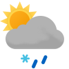

Weather
Germersheim 5.6-7.6
5.6-7.6

5.9-7.9 Thu

6.8-8.7 Fri

7.9-9.6 Sat

4.5-7.8 Sun

1.5-6.4 Mon

-0.3-5.8 Tue

2.9-5.7 Wed

-2.7-4.3 Thu

-3.8-5.4 Fri

-1.7--1.7 Sat
Erlabrunn -0.8-1.4
-0.8-1.4

-0.6-0.8 Thu

-0.6-3.5 Fri

0.1-1.6 Sat

-1.1-1.2 Sun

-3.0--1.5 Mon

-1.7--0.4 Tue

-4.8-0.2 Wed

-5.7--1.5 Thu

-5.4--1.2 Fri

-3.7--3.7 Sat
Schmilka 2.1-5.2
2.1-5.2

0.9-4.2 Thu

1.6-6.9 Fri

0.4-4.0 Sat

-2.8-1.7 Sun

-0.3-2.5 Mon

-0.9-2.3 Tue

-2.1-2.0 Wed

-3.6--1.8 Thu

-6.6-0.0 Fri

-6.1--6.1 Sat